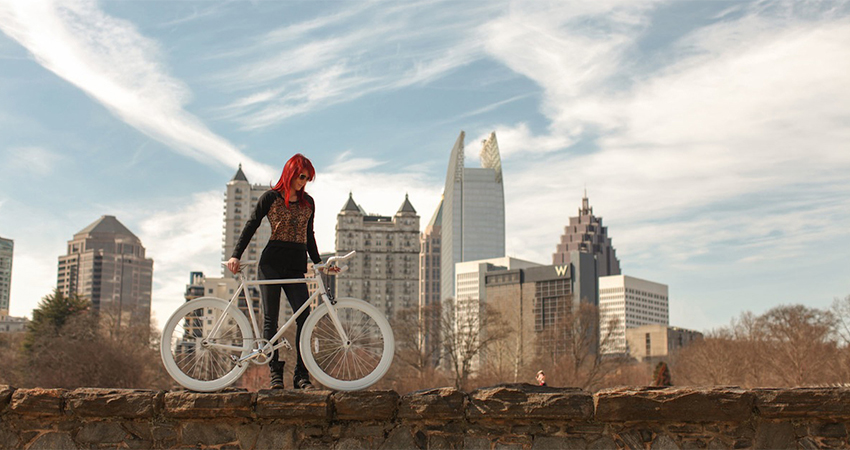

I recently graduated from a Front-End Web Development course at General Assembly where I learned HTML, CSS, JavaScript, jQuery and how to be an awesome Front-End Web Developer! During my spare time, I enjoy senior water aerobics, pickling, and spending time with my goldfish, Jerry.
Portfolio
Citipix

Creative Director, ICJ Design 2009 - present
Directs the daily operations of the successful graphic design company; secures and retains clients, performs assessment interview, presents solutions, calculates bids, and successfully closes sales. Manages the design and production operations; creates innovative marketing and instructional materials; ensures positive brand reflection for clients. Leads digital and print development initiatives.
Performs a wide-range of design and creative services, including research, develop, and design marketing and editorial presentations, retail and exhibit displays, static and interactive infographics, technical reference and patent illustrations, text generation and editing, and photo editing
Leads project operations and coordinates lifecycles; prioritizes assignments, allocates resources, maintains budgets, contains costs, executes work orders, and achieves timely deliveries
Analyzes and implements internal business processes, procedures, and practices and spearheads the development of new programs to improve the client experience, and business development
Presented visual journalism solutions to news directors for major stories; selected to serve as a lead for graphic and photo driven projects and act as a visionary. Conceptualized, researched, authored, and edited photo packages and infographics for time-sensitive projects, while achieving relevance to topics; established key project plans and achieved timeliness, efficiency, and quality.
Consistently assumed cross-functional responsibilities and achieved excellence in the day-to-day activities; remotely delegated and executed major assignments
Project managed photo and graphics initiatives; researched, created, and selected visually compelling imagery, monitored trends and site analytics, managed and presented budgets, and allocated key resources
Provided influential leadership, coaching, and mentorship to teams; delegated assignments; prioritized projects based on user engagement; facilitated training programs; planned and coordinated workflow within the CMS Led new process efficiency initiatives to streamline copy editing tasks; designed and implemented new approaches to graphics to improve technical and click performance; facilitated and led SEO training programs and planned and coordinated workflow within the Bedrock CMS
Presented visual journalism solutions to news directors for major stories; selected to serve as a lead for graphic and photo driven projects and act as a visionary. Conceptualized, researched, authored, and edited photo packages and infographics for time-sensitive projects, while achieving relevance to topics; established key project plans and achieved timeliness, efficiency, and quality.
Consistently assumed cross-functional responsibilities and achieved excellence in the day-to-day activities; remotely delegated and executed major assignments
Project managed photo and graphics initiatives; researched, created, and selected visually compelling imagery, monitored trends and site analytics, managed and presented budgets, and allocated key resources
Provided influential leadership, coaching, and mentorship to teams; delegated assignments; prioritized projects based on user engagement; facilitated training programs; planned and coordinated workflow within the CMS Led new process efficiency initiatives to streamline copy editing tasks; designed and implemented new approaches to graphics to improve technical and click performance; facilitated and led SEO training programs and planned and coordinated workflow within the Bedrock CMS